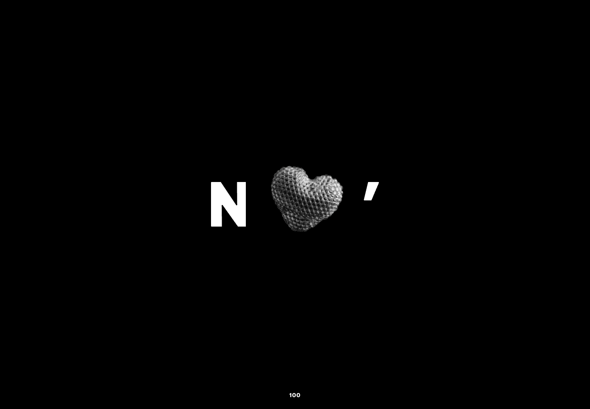
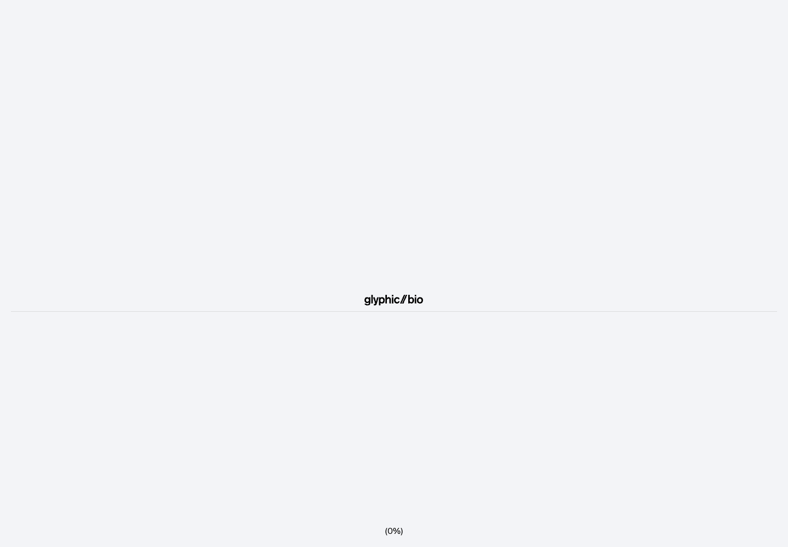
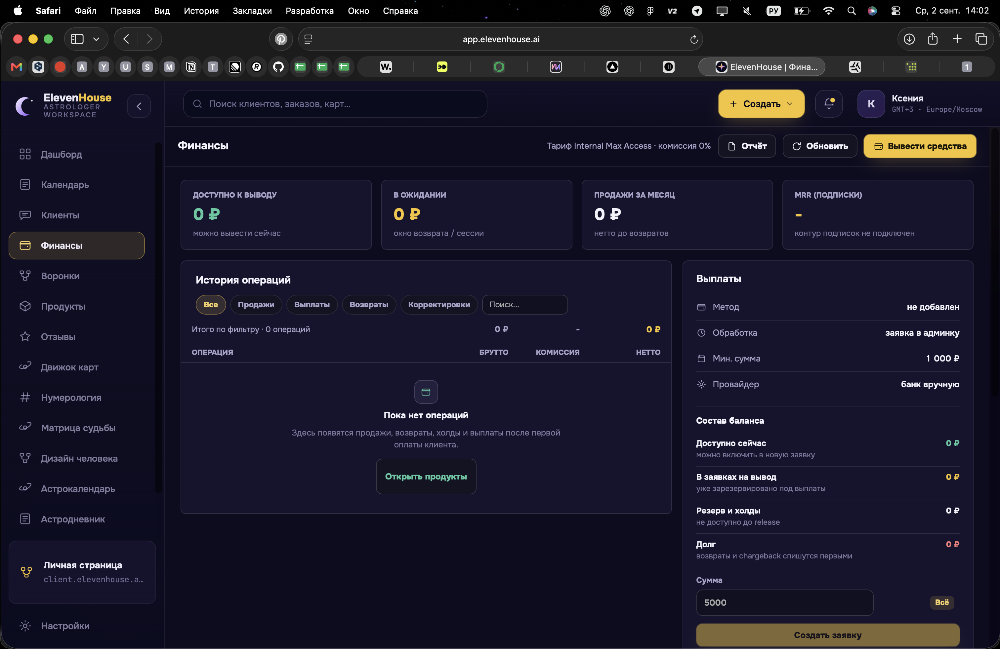
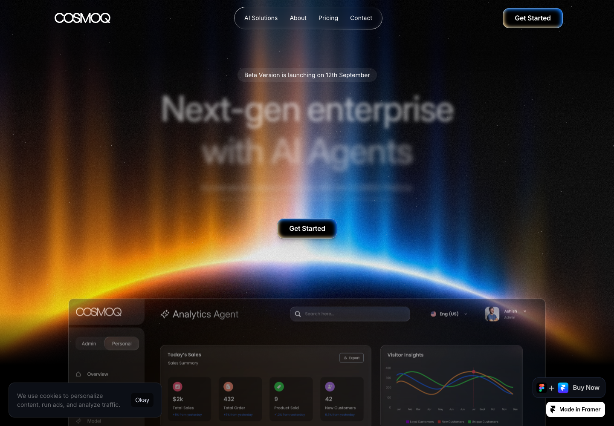

04 · Продукт в деле
PRODUX: pinned large product plane. GLYPHIC: disciplined hierarchy. Screenshot remains untouched product truth.

Motion / scaleEH-P05 · P07 · P01
PRODUX: pinned large product plane. GLYPHIC: disciplined hierarchy. Screenshot remains untouched product truth.
NOTHIN’: causal transitions. MESH3D: controlled depth. No abstract AI mascot or invented generated state.

GLYPHIC: index and spacing. One dominant viewport; secondary surfaces become navigation, not equal tiles.

Commercial surface with editorial asymmetry: Pro interrupts the shared baseline. Exact tariff data only.

NAYA restraint and SHARPLINK typographic relationships. Return to dark without adding a second cosmic spectacle.

These requested states are intentionally not represented as completed product proof.